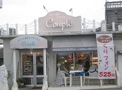
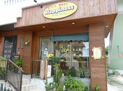
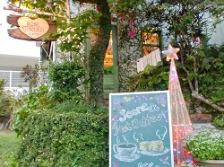

sweets shop
北中城の美味しいパン＆スイーツ
スウィーツ菓子＆プチカフェクプル
北中城村では老若男女問わず、愛され続けているケーキ屋さん『クプル』。季節ごとにかわいくディスプレイした店内は、お店に来た人に笑顔になってほしいから。スイーツ単体はもちろん、箱詰めや花束風のラッピングなどのおしゃれなギフト用スイーツも取り扱っているのも魅力。
ベーカリーハピネス
東京の有名なパン屋さんで腕を磨いた店主の玉城さんが作るパンは、安い、おいしい、健康がモットー。中でも人気は『ひまわりパン』。ダイエットや様々な生活習慣病予防に効果があると言われるひまわりの種や白胡麻を使用した、健康を考えたパン。
ROSE GARDEN
お母さんが始めたスコーン作りは、娘さんの愛さんに受け継がれ２３年。「素朴な焼き菓子だけに、上質な素材がものをいうんですよ」と話す、愛さん。彼女の親しみやすい笑顔も、ここを訪れる楽しみだったり。